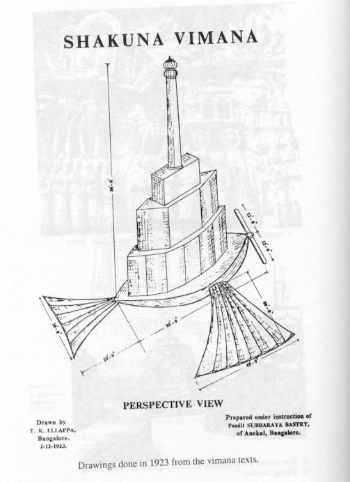
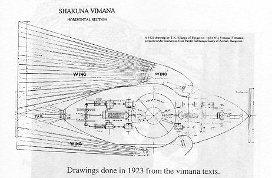
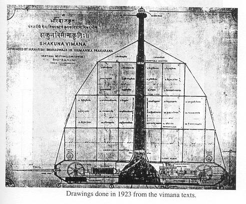
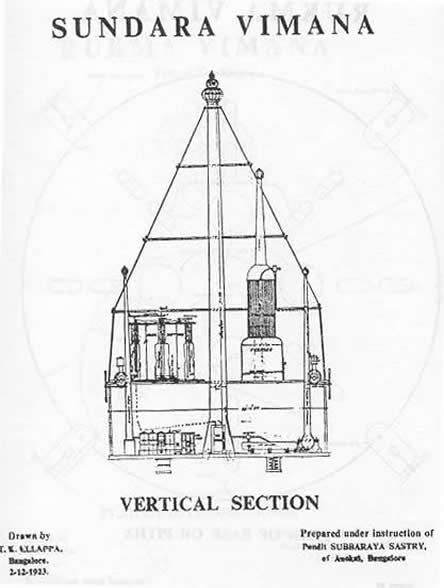
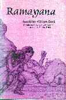

Dans la littérature Védique de l'Inde, il existe de nombreuses descriptions de machines volantes qui sont
généralement appelées vimanas. Elles se divisent en 2 catégories :
des appareils construits par l'homme, ressemblant aux avions et volant à l'aide d'ailes comme
celles des oiseaux. Ces machines sont principalement décrites dans des travaux en Sanskrit médiévaux et séculaires
liés à l'architecture, les automates, les machines de siège militaire, et autres adaptations mécaniques. ;
des structures non profilées volant d'une manière mystérieuse et généralement pas construites par des êtres
humains. Ces machines sont décrites dans des travaux anciens tels que :
Rg Veda
le Maha-bha-rata
Rama-yana
le Pura-nas
le Vaima-nika-sa-stra qui fut dicté en France au 20ème siècle et qui prétend être la transcription d'un ancien
travail préservé dans l'archive akashic. Ce document donne une description élaborée des vimanas des 2
catégories.
Machines de l'Inde ancienne et médiévale
En Sanskrit, une machine est appelée yantra. Le mot yantra est défini dans le Samarangana-sutradhara du Roi Bhoja
comme un appareil qui contrôle et dirige, conformément à un plan, le mouvement des choses qui agissent chacune en
accord avec leur propre nature. Il existe de nombreuses variétés de yantras :
le taila-yantra, une roue tirée par des boeufs autour d'une piste circulaire pour moudre les graines et extraire
leur huile ;
des machines militaires du type de celles décrites dans le Arthasastra de Kautilya, écrit au 3ᵉ siècle avant
J.-C., dont :
le sarvato-bhadra, une roue tournoyante qui projette des pierres ;
le sara-yantra, une machine à envoyer des flèches ;
le udghatima, une machine démolissant les murs à l'aide de barres de fer ;
etc.
Ces machines sont toutes assez compréhensibles et crédibles, mais il existe d'autres machines qui semblent moins
plausibles du point de vue de la pensée historique moderne. Thus Raghavan mentionne un appareil qui pouvait créer
une tempête pour démoraliser les lignes ennemies. Une telle arme est également mentionnée par l'auteur Romain du 3ᵉ
siècle Flavius Philostratus, qui décrivit des sages en Inde qui ne combattent pas un envahisseur, mais le
repoussent avec une artillerie céleste de tonnerre et d'éclairs, pour eux qui sont des hommes saints et
sacrés. Philostratus indiquait que ce genre d'arme de feu ou de vent était utilisée pour repousser une
invasion de l'Inde par Hercules Egyptien, et il existe une lettre apocryphe dans laquelle Alexandre le Grand déclare
à son tuteur Aristote avoir également rencontré de telles armes.
Les érudits modernes tendent à considérer les travaux de Philostratus comme de fiction, mais cela démontre que
certaines personnes de l'époque Romaine faisaient circuler des histoires à propos d'armes inhabituelles de feu ou de
vent en Inde. Dans d'anciennes épopées comme le Mahabharata, il existe de nombreuses références à des armes de vent
remarquables telles que le vayavya-astra et des armes de feu telles que le sataghni. En general, les armes décrites
dans des travaux plus anciens tendent à être plus puissantes et remarquables que celles décrites dans des travaux
plus récents. Certains attribuent cela à la fantastique imagination des auteurs anciens ou à leurs rédacteurs
modernes. Mais cela pourrait également être expliqué par une perte progressive de la connaissance à mesure que la
civilisation Indienne fut affaiblie par la corruption et successivement envahie par des forces étrangères.
Il a été avancé que les pistolets, canons, et d'autres armes à feu étaient connue dans l'Inde ancienne et que la
connaissance déclina progressivement et disparut complètement au début de l'ère Chrétienne. Ceci est discuté en
détails dans un livre de Gustav Opperts.
Robots et autres automates
Les robots constituent une autre catégorie de machines remarquables. Il existe de nombreux récits séculaires dans
la littérature sanskrit décrivant un yantra-purusa, ou homme-machine, qui peut se comporter exactement comme un être
humain. Un exemple en est une histoire dans le Bhaisajya-vastu boudhiste, dans laquelle un peintre arrive dans le
pays de Yavana et visite le foyer d'un yantracarya, ou professeur d'ingéniérie mécanique. Là il rencontre une
fille-machine qui lave ses pieds et semble humaine, jusqu'à ce qu'il découvre qu'elle ne peut pas parler.
Des robots fantastiques de cette sorte apparaissent souvent dans les histoires de fictions destinées au
divertissement, et ont ainsi le même statut que les robots de la science-fiction moderne. Cependant, il existe de
nombreus'es descriptions d'automates assez crédibles qui furent effectivement construits et utilisés dans les palais
de rois fortunés. Ceux-ci incluent : des oiseaux chantant et dansant, un éléphant dansant, des chronomètres élaborés
avec des figures d'ivores animées et un instrument astronomique montrant le mouvement des planètes.
La conception de ces automates est semblable à celle des automates qui furent populaires en Europe au 18ème siècle.
Voici une description extraite du Samararigana-sutradha-ra du 12ᵉ siècle :
Des figures mâles et femelles sont conçues pour divers types de services automatiques. Chaque partie de ces
figures est faite et ajustée séparément, avec des trous et des chevilles, afin que cuisses, yeux, nuque, main,
poignet, avant-bras et doigts puissent agir en fonction des besoins. Le matériau utilisé est principalement du
bois, mais une couche de cuir est donnée pour compléter l'impression d'un être humain. Les mouvements sont gérés
par le systèmes de poles, chevilles et chaines attachées à des baguettes contrôlant chaque membre. Regarder dans
un mirroir, jouer à la lutte et tendre la main pour toucher, donner un pot, arroser de l'eau et faire obéissance
sont les actes effectués par ces figures.
En dehors de leurs applications pratiques, les robots fournissent également une métaphore de la relation entre l'âme et le corps. Ainsi, dans le Bhagavad-gita, Krisna dit :
Le Seigneur Suprême se trouve dans le cœur de chacun, O Arjuna, et guide l'errance de toutes les entités
vivantes, qui sont assises comme sur une machine (yantra) faite de l'énergie matérielle.
Raghavan, pour sa part, trouve la métaphore regrettable. Il déplore que dans d'autres pays les machines aient
abouti à une civilisation matérialiste, alors qu'en Inde elles ont seulement renforcé l'idée de Dieu et de l'Esprit.
Ainsi, même les écrivains qui ont réellement eu affaire avec les yantras, comme Somadeva et Bhoja, virent dans la
machine manipulée par un agent une analogie appropriée pour le corps terrestre et les sens régis par l'âme, et pour le mécanisme merveilleux de l'univers, avec ses élements
constituants et ses systèmes planétaires, nécessitant une maîtrise divine pour les conserver en évolution
constante.
Avions
Il existe de nombreuses histoires dans la littérature indienne médiévale concernant des machines volantes. Ainsi
dans le Harsa-carita de Bana il y a l'histoire d'un Yavana qui construisit une machine aérienne qui fut utilisée
pour kidnapper un roi. Egalement, l'Avanti-sundar de Dandl parle d'un architecte nommé Mandhata qui utilisa une
voiture aérienne dans des buts aussi courants que parcourir une distance pour voir si son jeune fils avait fait. Son
fils, d'ailleurs, était réputé avoir créé des hommes mécaniques qui combattaient dans un faux duel ainsi qu'un nuage
artificiel qui produisait d'énormes averses. Chacun de ces travaux remonte au 7ème siècle avant J.-C. environ.
Dans la 9ème des 10 centuries, Buddhasvamin écrit une version du Brhat-kathd, une impressionnante collection
d'histoire populaires. Buddhasvamin parle des véhicules aériens comme des dkdsa-yantras, ou machine-du-ciel, et les
attribue aux Yavanas, un nom souvent utilisé pour désigner les étrangers barbares. Il très courant pour les machines
volantes et les yantras en général d'être attribués aux Yavanas dans les textes Sanskrit.
Certains érudits prennent les Yavanas pour les Grecs, et attribuent les histoires indiennes de machines à une
origine grecque. Par exemple, Penzer pense que le philosophe Grec Archytas a pu être le "premier inventeur
scientifique" d'appareils ressemblant aux yantras indiens, et note que Archytas construisit une sorte de machine
volante, consistant en une figure de bois équilibrée par un poids suspendu à une poulie, et mis en mouvement par
de l'air caché et enfermé.
Il y eu sans nul doute beaucoup d'échanges d'idées dans l'ancien monde, et il est difficile aujourd'hui de savoir
avec certitude où une idée particulière fut inventée et à quel point elle fut développée. On sait cependant que des
idées relativement bien détaillées à propos de machines volantes ressemblant à des avions étaient connues dans
l'Inde médiévale.
Le Samardngana-sutradhdra de Bhoja indique que le principal matériau du corps d'une machine volante est le bois
léger, ou laghu-ddru. L'appareil a la forme d'un grand oiseau avec une aile de chaque côté. La force motrice est
fournie par une chambre à feu avec du mercure placé au-dessus d'une flamme. La puissance générée par le mercure
chauffé, combinée au battement des ailes avec un pilote à l'intérieur, amène la machine à vol dans les airs.
L'appareil étant équipé d'un moteur, on peut penser que le battement des ailes avait pour but de contrôler la
direction du vol plutôt que de fournir la puissance motrice.
Je suggèrerai que les vimanas décrits par Bhoja sont semblables à des avions conventionnels. Ainsi ils sont fait de
matériaux ordinaires comme le bois, ont des ailes, et volent comme des oiseaux. Raghavan suggère que le moteur à
mercure avait pour but d'être une source d'énergie mécanique pour la battement des ailes comme pour un vol d'oiseau.
Il appuie cela en notant que Roger Bacon décrivit une machine volante dans laquelle une sorte de moteur en rotation
faisait battre des ailes à l'aide de liens mécaniques.
Ramachandra Dikshitar, cependant, indique que d'après le Sama-rdngana-sutradhdra, le vimana a deux ailes
resplendissantes, et est propulsé par de l'air. Cela suggère qu'une sorte de propulsion à réaction était
utilisée.
Cependant ces vimanas avaient bien une énergie, et il semble probable qu'ils se basaient sur une sorte de méthode
conventionnelle mécanique qui extrayait de l'énergie de la combustion de carburant et l'utilisait pour produire un
flux d'air au-dessus des ailes. Les vimanas mentionnés dans le Samardrigana-sutradhdra furent-ils réellement
construits, ou étaient-ils seulement des produits de l'imagination ? Je ne sais pas. Cependant, les descriptions
élaborées de yantras trouvées dans les texts médiévaux indiens suggèrent que de nombreuses machines sophistiquées
furent construites en Inde il y a bien longtemps. Si une technologie mécanique sophistiquée était connue dans des
temps reculés, alors il est fort possible que des sortes d'avions aient aussi été construites. Il est intéressant
que le texte astronomique Sanskrit intitulé Surya-siddhdnta mentionne un moteur à mercure utilisé pour fournir un
mouvement rotatif à un gola-yantra, un modèle mécanique du système planétaire. Cela suggère qu'au moins une sorte de
moteur à mercure était utilisée pour produire une énergie de rotation. Le texte indique également que la conception
du moteur à mercure doit être gardée secrète. Il était une pratique standard en Inde ancienne que le savoir
technique soit transmis d'un professeur à un disciple de confiance. Une conséquence malheureuse de cela est que la
connaissance tendit à se perdre à chaque fois que les traditions orales dépendant des professeurs et des disciplines
étaient brisées. Il est donc très possible que de nombreux arts et sciences connues dans les anciens temps aient été
perdus pour nous, pratiquement sans trace.
D'autres travaux de Sanskrit se réferrant à des machines volantes sont listées dans lun livre de Dileep Kanjilal.
Il s'agit de : le Yukti-kalpataru de Bhoja (12ᵉ siècle après J.-C.) ; le Mayamatam attribué à Maya Dfinava mais
datant probablement du 12ᵉ siècle aprèst J.-C. ; le Kathdsaritsdgara (10ème siècle avant J.-C.); la littérature
Avaddna (premiers 3 siècles A.D.); le Raghuvamsam et Abhijndna-sakuntalam de Kalidasa (1er siècle avant J.-C.); le
Abhimdraka de Bhasa (2ᵉ siècle avant J.-C.); et mes Jdtakas (3ᵉ siècle avant J.-C.). Des dates sont souvent
approximatives, et le matériau des différents travaux est souvent extrait de travaux et de traditions plus
anciennes.
Le Vaimaniko-Sastra

Vimana Shakuna, dessiné réalisé en 1923
Le Vaimanika-sastra est une description très détaillée des vimanas, et on lui donne une grande crédibilité dans de
nombreux ouvrages et articles. On trouve parmi ceux-ci les écrits de Kanjilal, Nathan, et Childress. En particulier,
l'ufologue indien Kanishk Nathan écrivit que le Vaimanika-sastra est un ancien texte Sanskrit qui décrit une
technologie qui non seulement dépasse de loin la science de l'époque mais est même au delà du cheminement de
l'imagination conceptuelle et scientifique d'un ancient Indien, y compris les concepts tels que l'énergie solaire
et la photographie.
Il est effectivement vrai que ce livre contient de nombreuses idées intéressantes au sujet de la technologie
aérienne. Mais il est important de noter qu'il fut écrit au début 20ème siècle par un procédé psychique connu
aujourd'hui comme le channeling.
L'histoire derrière cela est présentée dans l'introduction de la traduction du Vaimanika-sastra de G. R. Josyer. Là
est expliqué que la connaissance en Inde était habituellement transmise oralement, mais que lorsque cette tradition
disparut, l'écriture sur des feuilles de palmier fut utilisée. Malheureusement, les manuscrits sur feuille de
palmier ne durent pas très longtemps dans le climat Indien, et de grandes quantités d'ancien documents écrits ont
été perdus parce qu'ils n'étaient pas régulièrement recopiés.

Vimana Shakuna, dessin réalisé en 1923
C'est certainement vrai. Mais Josyer en arriva à dire que les textes perdus restent enfermés dans l'éther du
ciel, pour être révélés comme à la télévision à des médiums doués de perception occulte. Le médium en question
fut Pandit Subbaraya Sastry, un walking lexicon gifted with occult perception, qui commença à dicter le
Vaimanika-sastra à Venkatachala Sarma le 1918-08-01. Le travail complet fut rédigé en livres d'exercice s jusqu'au
23 Août 1923. En 1923, Subbaraya Sastry demanda également à un dessinateur de préparer certains dessins des vimanas
d'après ses instructions.
D'après Subbaraya Sastry, le Vaimanika-sastra est une section d'un vaste traité du sage Maharsi Bharadvaja intitulé
Yantra-sarvasva, ou l'encyclopédie des Machines. Maharsi Bharadvaja est un ancient risi mentionné dans le
Mahabharata et d'autres travaux Védiques, mais je n'ai connaissance d'aucune référence indiquant qu'il fut concerné
par les machines. Le Yantra-sarvasva n'existe plus sous sa forme physique, mais est réputé exister dans le récit
akashique, où il est lu et récité par Subbarayat Sastry.

Vimana Shakuna, dessiné réalisé en 1923
Autant que je sache, il n'existe pas de références à ce travail dans la littérature existante. Cela est discuté
dans le livre de Kanjilal sur les vimanas. Bien que le Vaimanika-sastra puisse être un canular, je n'ai pas de
raison de supposer qu'il ne fut pas dicté par Subbaraya Sastry de la manière décrite par Josyer. Mais le travail
est-il authentique ? Même s'il existait en tant que motif vibratoire dans l'éther, durant le processus de lecture et
de dictée psychique il peut avoir été distordu ou altéré par des éléments de l'inconscient du médium.
En fait, il y a de bonnes raisons de croire que cela a été le cas. Le texte du Vaimanika-sastra est illustré par
divers dessins réalisés sous la supervision de Subbaraya Sastry. Ceux-ci incluent des sections recoupées du
rukma-vimana, du tripura-vimana, et du sakuna- vimana. Ces sections recoupées montrent le type de technologie
mécanique et électrique qui existait à l'époque suivant juste la 1ère guerre mondiale. Il y a de grande
électro-aimants, des cranks, des shafts, des worm gears, des pistons, des bobines chauffantes et des propulseurs
tourants à moteurs électriques. Le rukma-vimana est supposé monté en l'air grâce à des "lifting fans" alimentés par
des moteurs électriques et qui sont très petits comparés à la tailles du vimana dans son ensemble. Cela ne ressemble
vraiment pas à quelque chose qui pourrait voler.
Ces appareillages mécaniques pourraient bien avoir été inspirés par la technologie du début du 20ème siècle. Mais
si nous nous tournons vers le texte du Vaimanika-sastra, nous trouvons des éléments d'une toute autre différente
nature. Pour illustrer cela, voici 10 examples extraits d'une liste du Vai-mdnika-sastra de 32 secrets qu'un pilote
de vimana devrait savoir :
Goodha : Comme indiqué dans le "Vaayutatva-Prakarana," en attirant les énergies, Yaasaa,
Viyaasaa, Prayaasaa dans la 8ème couche atmospherique recouvrant la Terre, pour attirer le contenu sombre du rayon
solaire, et l'utiliser pour dissimuler le Vimaana de l'enemi.
Drishya : Par collision de l'énergie électrique et de celle du vent dans l'atmosphere, un
lueur est créée, dont la réflection doit être capturée dans le Vishwa-Kriyaa-darapana ou un mirroir à l'avant du
Vimana, et par cette manipulation produire un Maaya-Vimaana ou Vimana camouflé.
Adrishya : D'après le "Shaktitantra," par le biais du Vynarathya Vikarana et d'autres énergies
du cœur de la masse solaire, attirer la force du flux éthérique du ciel, et le mêler avec le balaahaa-vikarana
shakti dans le globe aérien, produisant ainsi une couverture blanche, qui rendra le Vimana invisible.
Ici 3 méthodes sont décrites pour cacher un vimana de l'ennemi. Elle semblent fantaisistes, mais il est
intéressant de noter que les vimanas décrits dans les Purdnas et le Mahabharata ont la capacité de devenir
invisibles. Le mot "shakti" (sakti) signifie puissance ou énergie.
Paroksha : D'après le "Meghotpatthi-prakarana", ou la science de la naissance des nuages, en
entrant le second dans les couches nuageuses de l'été, et en y attirant l'énergie avec le shaktyaakarshana
darpana ou mirroir de force d'attraction dans le Vimana, et en l'appliquant au parivesha ou halo du Vimana, une
force paralysante est créée, et les Vimanas opposants sont paralysées et mis hors d'action.
Aparoksha : D'après le "Shakti-tantra," par projection du rayon de lumière Rohinee, les choses
en face du Vimana sont rendues visibles.
Viroopa Karena : Comme cité dans le "Dhooma Prakarana," en produisant le 32ᵉ type de fumée
grâce au mécanisme, et en le chargeant avec la lumière des vagues de chaleur du ciel, et en le projetant par le
tube padmaka chakra vers le bhyravee enduit d'huile Vyroopya-darpana au sommet du Vimana, et en tournoyant avec
le 32ᵉ type de vitesse, une forme très féroce et terrifiante du Vimana émergera, causant une expression de
peur des spectateurs.
Roopaantara : Comme indiqué dans le "Tylaprakarana," en préparant des huiles griddhrajihwaa,
kumbhinee, et kaakajangha et en enduisant le mirroir déformant dans le Vimana avec elles, y appliquant le 19ème
type de fumée et le chargeant avec le kuntinee shakti dans le Vimana, un changement en lion, tigre, rhinocéros,
serpent, montagne, rivière apparaîtra et étonnera et troublera les observateurs.
Saarpa-Gamana : En attirant le dandavaktra et les autres 7 forces de l'air, et en se joignant
aux rayons solaires, le passant au travers du centre zig-zagguant du Vimana, et en tournant le bouton, le Vimana
aura une mouvement zig-zagguant comme un serpent.
Roopaakarshana : Utiliser le yantra photographique dans le Vimana pour obtenir une vue
télévision de choses à l'intérieur d'un avion ennemi.
Kriyaagrahana : En tournant la clé à la base de l'Imana, une couverture blanche apparaît.
Enélectrifiant les 3 acides de la partie Nord-Est du Vimana, et en les soumettant aux 7 types de rayons
solaires, et en passant la force résultante dans le tube mirroir Thrisheersha... toutes les activités se
déroulant en-dessous au sol, seront projetées sur l'écran.

Vimana Sundara, dessin réalisé en 1923
Le mot "télévision" du point 9 fut employé dans la traduction anglaise du Vaimanika-sastra qui sortit en 1973. Le
texte Sanskrit d'origine fut écrit en 1923 avant que le télévision soit dévelopée.
Il semble clair que les illustrations dans le Vaimanika-sastra sont contaminées par les éléments du 20ème siècle de
l'inconscient du médium. Cependant les passages que je viens de citer contiennent une majorité d'éléments non
propres au 20ème siècle, et cela est exprimé en termes de mots et idées Védiques. Cela peut être largement le
produit de l'imagination de Subbaraya Sastry appliquée à sa connaissance Védique étendue, ou cela peut être un rendu
raisonnablement honnête d'un ancien texte Védique préservé comme un motif étherique.
La seule façon de tirer cela au clair est d'obtenir d'autres textes Sanskrit obscurs et de voir s'ils confirment ou
non certains des éléments du Vaimanika-sastra. Des confirmations répétées indiqueront pour le moins que Subbaraya
Sastry présentait les éléments d'une tradition authentique, et des investigations supplémentaires seraient
nécessaires pour voir si ou non cette tradition reposait sur des faits réels. Pour l'instant, nous devrions rester
ouvert à de multiples interpretations possibles des éléments du Vaimanika-sastra.
Vimanas dans la littérature Védique

Ramayana
Le Bhagavata Purana, le Mahabharata, et le Ramayana sont 3 travaux importants dans la tradition Védique de l'Inde
et contiennent beaucoup d'éléments intéressants impliquant des véhicules aériens, nommés vimanas. Ils décrivent
aussi différentes races d'êtres semblables aux humains qui pilotent ces véhicules, et discuttent des relations
sociales et politiques existant dans les anciens temps entre ces êtres et les humains de cette Terre.
Pour certains, ces éléments sont sans valeur parce qu'ils semblent fantastiques et mythologiques. Ainsi l'ufologue
indien Kanishk Nathan rejetta les textes des vieilles religions Hindoues parce qu'elles attribuent des exploits
exagérés aux dieux. Il les considéra comme de la simple poésie dans laquelle un écrivain qui ne rapport pas des
événements réels peut laisser aller son imagination partout où elle souhaiter le mener. Il note également que
ces textes appartiennent à une ère pré-scientificque, et par conséquent, Etant donné la connaissance Culturelle,
technologique et scientifique de cette période historique, un écrivain peut, tout en appréciant les généralités et
évitant les détails, créer des inventions et des combinaisons que n'existent pas en réalité.
On peut répondre qu'il n'a pas été établi que les anciens écrivains s'adonnaient simplement à l'imagination
poétique, sans égard pour les faits. Il y a un préjudice moderne au fait que tout personne ayant des intérêts
spirituels est non-scientifique, et que tout ce qu'il écrit doit être imaginaire. Ce point de vue est censé tant que
l'ensemble des données observables tendent à soutenir un modèle de monde mécanistique excluant les vielles idées
religieuses comme autant d'illusions exposées.
Mais si nous examinons avec attention le phénomène ovni, nous trouvons un grande masse d'observations empiriques
qui contredisent complètement notre confortable vision mécanistique du monde. Il est intéressant de noter que ces
éléments anormaux, allant de configurations de vols physiquement impossibles à des êtres flottant à travers les
murs, correspondent assez naturellement à la cosmologie à orientation spirituelle des anciens textes védiques. Il
est donc intéressant de considérer que les rédacteurs de ces textes auraient pu présenter une description criante de
la réalité telle qu'ils l'ont vécue, plutôt qu'un simple laisser-aller à une imagination effrênée.
Vimanas d'usage général
Le chapitre précédent a présenté l'histoire de vimana de Salva, que l'on trouve dans le Mahabharata et le Bhagavata
Purdna. Il s'agissait d'un grand véhicule militaire qui pouvait transporter des troupes et des armes, et qui fut
obtenu par Salva d'un expert en technologie non-humaine nommé Maya Danava. Les Purdnas et le Mahabharata contient
également de nombreux récits de plus petits vimanas, comprenant des appareils de loisir apparement conçus pour un
seul passager. Ils étaient généralement utilisés par les Devas et les Upadevas mais pas par des humains.
Dans cette section, je donnerai une série d'examples, montrant comment les vimanas figurent comme les éléments de
nombreuses histoires différentes de ces textes. Chaque exemple est extrait du milieu d'une plus grande histoire, et
il n'est pas possible de présenter ces histoires entièrement dans ce livre. Mon objectif est de montrer que les
vimanas sont fréquemment mentionés dans les Purdnas et le Mahabharata. Apparemment, ils étaient aussi courants pour
les gens de l'ancienne culture védique que les avions le sont aujourd'hui.
Dans le premier récit, Krisna tue un serpent semblable à un python qui essayait d'avaler son père, le roi Nanda.
Par action de Krisna, l'âme du serpent fut transferée dans un nouveau corps d'un
type possédé par des êtres célestres nommés Vidyadharas. Cette âme posséda un tel
cors céleste avant être placée dans le corps d'un serpent, et Krisna lui demanda pourquoi il avait dégradé à une
forme de serpent :
Le serpent répondit :
Je suis le Vidyadhara bien connu nommé Sudarsana. J'étais très opulent et beau, et j'avais l'habitude d'errer
librement dans toutes les directions dans pour avion. Une fois je vis certains sages laids de la lignée de Angira
Muni. Fier de ma beauté, je les ridiculisai, et à cause de mon péché ils me firent prendre cette forme inférieure.
Dans ce passage le mot Sanskrit "vimanena" est traduit "dans mon avion". Il semble avoir été un petit véhicule
privé.
La prochaine histoire est similaire. Krisna libéra l'âme du roi J Nrga de son
emprisonnement dans le corps d'un lézard et lui donna un corps céleste. Lorsque le moment vint pour le roi de
partir, un vimana d'un autre monde vint pour le chercher :
Ayant ainsi parlé, Maharaja Nrga se promena autour du Seigneur Krisna et fit toucher sa couronne sur les pieds du
Seigneur. Autorisé à partir, le Roi Nrga embarqua alors un magnifique avion céleste alors que tout le monde
présent le regardait.
Dans le cas suivant, nous voyons l'effet d'une belle femme sur le pilote d'un vimana. Ici le sage Kardama Muni
décrit la beauté de sa future femme, Devahuti, à son père, Svayambhuva Manu:
J'ai entendu que Visvavasu, le grand Gandharva, son esprit stupéfié par l'amour fou, tomba de son avion après
avoir vu votre fille jouant avec une balle sur le toit du palais, car elle était effectivement belle avec sa
cheville tintante et ses yeux faisait des va-et-vient.
Il semblerait que le vimana de Visvavasu était un petit mono-siège. Peut-être n'avait-il pas de ceintures de
sécurité adéquates, et il vira trop fortement alors qu'il essayait de voir Devahuti.
Après que Kardama Muni eut épousé Devahuti, il décida à un certain moment de l'emmener faire le tour de l'univers.
Pour ce faire, il dévoilà une demeure aérienne (appelée, comme d'habitude, vimana) qui fut abondamment équipée comme
un palais d'agrément. Ici le sage Maitreya relate l'histoire de cette demeure à son disciple Vidura :
Maitreya continua :
O Vidura, cherchant à combler sa femme adorée, le sage Kardama exerça son pouvoir yogique et produisit
instantanément une demeure aérienne qui pouvait voyager selon son gré.
Elle avait une structure merveilleuse, ornée de toutes sortes de joyaux, parée de colonnes de pierres précieuses,
et capable de rendre tout ce que l'on pouvait désirer. Il était équipé de toute sorte de fourniture et
d'abondance, qui tendait à augmenter au fil du temps...
Avec le meilleur choix de rubis dans ses murs de diamants, on aurait dit qu'il possédait des yeux. Il était garni
de magnifiques voûtes et de grandes et précieuses portes d'or.
Ici et là dans ce palais étaient des multitudes de cygnes et pigeons vivants, ainsi que des cygnes et pigeons
artificiels semblant si vivants que les véritables cygnes s'élevaient au-dessus d'eux encore et encore, les
considérant comme des oiseaux vivant comme eux. Ainsi que palais vibrait aux sons de ces oiseaux.
Le château avait des niveaux de loisirs, des chambres de repos, des chambres à coucher et des cours intérieures et
extérieures conçues pour le confort. Tout cela causé l'étonnement du sage lui-même.
Le sage était étonné parce qu'il n'avait en fait pas conçu ni imaginé le palais aérien en détails. En fait, ce
qu'il avait fait fut mentalement mis en place pour un palais volant, et il le reçut d'un sorte de système universel
de fourniture parce qu'il avait gagné un bon crédit karmique au travers de ses austérités et de sa pratique du yoga.
Pour comprendre ce qui se passait là, il est nécessaire de considérer certaines caractéristiques de base de la
conception védique de l'univers.
Au cours des années, de nombreuses analogies ont été utilisées pour décrire l'univers. Ainsi les Aristotéliciens
comparaient l'univers à un organisme vivant, et les premiers philosophes mechanistiques le comparaient à une
gigantesque horloge. Pour comprendre la conception védique de l'univers, l'idée moderne d'un ordinateur avec un
système d'exploitation multi-niveaux est utile. Sur le disque dur d'un tel ordinateur se trouvent des programmes qui
peuvent être mis en action en tapant les mots code appropriés. Lorsqu'un mot code est tapé, le programme
correspondant sera exécuté dans l'ordinateur si l'utilisateur de l'ordinateur a le statut adéquat. S'il ne l'a pas,
alors pour lui le mot code n'est qu'un nom sans utilité.
Typiquement, le statut de l'utilisateur est déterminé par le mot de passe lorsqu'il commence à utiliser
l'ordinateur. Différents utilisateurs auront des mots de passe indiquant différents niveaux de statut. Au-dessus de
tous les utilisateur est une personne nommé (dans le système d'exploitation Unix) le super-utilisateur, qui a le
contrôle total de l'ensemble des programmes du système. Cette personne est souvent responsable de la création de
l'ensemble du système en chargeant diverses portions de logiciel dans l'ordinateur.
Dans la conception védique, l'univers à une organisation similaire. Le super-utilisateur correspond à l'Etre
Suprême, qui According to the Vedic conception, the universe has a similar organization. The superuser corresponds
to the Supreme Being, qui manifeste l'ensemble du système universel. Au sein de ce système se trouve une hiérarchie
d'êtres vivants ayant différents statuts. Un être au niveau humain ordinaire possède de nombreux pouvoirs
remarquables, tel le pouvoir de parler, et un être à un niveau supérieur, tel que Kardama Muni, peut manifester des
pouvoirs encore plus grands. Lorsque nous grandissons en utilisant un certain pouvoir, nous tendons à le prendre
comme acquis, et lorsque nous manquons totalement d'un pouvoir, nous tendons à le regarder comme impossible ou
mythologique. Mais l'ensemble des pouvoirs y compris le pouvoir d'appeler des palais volants, sont simplement des
programmes construits dans le système universel par le super-utilisateur.
Le parallèle entre la conception védique de l'univers et un ordinateur peut être rendu plus explicite en
introduisant le coneption d'un système de réalité virtuelle. Il est possible de créer un monde artificiel par calcul
sur ordinateur et d'équiper des participants humains avec des interfaces sensorielles leur donnant l'impression de
pénétrer dans ce monde. Par exemple, un participant disposera de petits écrans TV placés face à ses yeux lui
permettant de voir de la position avantageuse des yeux virtuels d'un corps virtuel au sein du monde artificiel. De
la même manière, il pourrait être équipé de capteurs de toucher lui permettant de sentir les objets virtuels tenus
dans les mains virtuelles de ce corps. Des capteurs scrutant les contractions musculaires ou ses impulsions
nerveuses pourront être utilisés pour diriger le mouvement du corps virtuel.
De nombreuses personnes peuvent pénétrer simultanément dans un monde virtuel de cette manière, et peuvent interagir
avec d'autres à travers leurs corps virtuels, même si leurs corps réels peuvent être très éloignés. En fonction de
leur statut, tel qu'il est reconnu par l'ordinateur du super-utilisateur, les différents corps virtuels peuvent
avoir différents pouvoirs, et certains de ces pouvoirs peuvent être invoqué en by prononçant des mots-codes, ou
mantras.
Un système très évolué de réalité virtuelle offre une métaphore de l'univers védique de maya, ou illusion, dans
lequel les âmes conscientes s'identifient faussement entre elles avec des corps matériels. Bien sûr, la métaphore ne
devrait pas être prise en compte littéralement. L'univers ne fonctionne en fait pas comme un ordinateur numérique.
En fait, il s'agit plutôt d'un système d'énergies en interactions qui, d'après la conception védique, possède des
caractéristiques et une organisation réminiscente de certains systèmes informatiques réalisés par l'homme.
Retournant à l'histoire de Kardama Muni, nous voyons qu'après avoir acquis sont merveilleux palais volant, il
commence voyager vers différentes planètes avec sa femme :
Satisfait par sa femme, il appréciait cette demeure aérienne pas seulement sur le Mount Meru mais dans différents
jardins connus comme Vaisrambhaka, Surasana, Nandana, Puspabhadraka, et Caitrarathya, et par le lac de
Manasa-sarovara.
Il voyagea de cette manière à travers les différentes planètes, comme l'air passait incontrôlé dans toutes les
directions. Se déplaçant par air dans cette grande et splendide demeure aérienne, qui pouvait voler selon sa
volonté, il surpassait même les demi-dieux.
Dans le Sanskrit, les Devas sont référencés ici comme vaimanikan, ce qui signifie voyageurs en vimanas.
Ainsi le vers dit littéralement que le vimana de Kardama Muni surpassait le vaimanikan. Le mot Sanskrit pour les
planètes est loka, qui peut désigner d'autres globes physiques et des mondes de plus hautes dimensions non
accessibles aux sens des humains ordinaires.
L'idée d'invoquer des programmes universels figure dans une autre histoire impliquant un vimana. Il semble qu'il
existe une sorte d'armure mystique nommée Narayana-kavaca, appelée en invoquant les noms de l'Etre Suprême (Narayana
est un nom du Suprême, et kavaca signifie armure.) Une fois, un brahmana nommé Kausika utilisa cette armure et
abandonna par la suite son corps physique. Encore plus tard, le roi Gandharva king, Citraratha, découvrit certaines
interférences étranges avec son vimana alors qu'il passait au-dessus des restes du corps de Kausika :
Entouré de nombreuses et belles femmes, Citraratha, le Roi de Gandharvaloka, passait une fois dans son avion
au-dessus du corps du brahmana à l'endroit où le brahmana était mort.
Citraratha fut soudain forcé de tomber du ciel tête la première avec son avion. Frappé de stupeur, il reçut
l'ordre de grands sages nommés Valakhilyas de jeter les os du brahmana dans la rivière proche de Sarasvat. Il dût
faire cela et se baigner dans la rivière avant de retourner à sa propre demeure.
Un exemple de vimana utilisé à des fins militaires provient de l'histoire de Bali, un roi des Daityas. Le véhicule
de Bali est très semblable à celui obtenu par Salva, et était aussi construit par Maya Danava. Il fut utilisé dans
une grande bataille entre les Daityas et les Devas :
Pour cette bataille le commandant en chef le plus célèbre, Maharaja Bali, fils de Virocana, était assis dans un
merveilleux avion nommé Vaihayasa. O Roi, ce bel avion décoré avait été réalisé par le démon Maya et fut équippé
avec des armes pour tous types de combat. Il était inconcevable et indescriptible. En fait, il était parfois
visible et parfois non. Assis dans cet avion sous une belle ombrelle protectrice et éventé par le meilleur des
camaras, Maharaja Bali, entouré de ses capitaines et commandants, apparut simplement comme la Lune se levant au
soir, illuminant toutes les directions.
Mon exemple final de vimana est extrait de l'histoire du sacrifice de Daksa. Il semble que Satl, la femme de Lord
Siva, voulu assister à un sacrifice arrangé par son père Daksa, mais que Siva ne voulait pas qu'elle y assiste en
raison de l'attitude offensive de Daksa envers lui. Ici nous voyons Satl implorer son mari de la laisser aller au
sacrifice après avoir vu les membres de sa famille voyager ici en vimanas :
O jamais-né, O celui à gorge bleue, pas seulement ma famille mais aussi d'autres femmes, habillées de beaux
vêtements et parées d'ornements, s'y rendent avec leurs maris et amis. Regarde juste comment leurs groupes
d'avions blancs ont rendu le ciel entier si beau.
Tous les êtres référencés ici sont des Devas ou Upadevas. Nous pouvons voir de cela et des autres exemples que les
vimanas étaient considérés comme un moyen de déplacement standard pour des êtres de ce rang.
Le Mahabharata contient également cette idée de cités volantes autonomes qui voyagent indéfiniment dans l'espace.
Dans cette section et les deux suivantes, j'en donnerai quelques exemples. Le premier est la cité volante de
Hiranyapura. Elle fut observée flottant dans l'espace par Arjuna alors qu'il voyageait dans les régions célestes
après avoir after vaincu les Nivatakavacas lors d'une grande bataille. Arjuna était accompagnée dans son voyage
céleste par un Deva nommé Matali, et il l'interrogea à propos de la cité. Matali répondit :
Il y avait une fois une femme Daitya nommé Puloma et un grand Asuri Kalaka, qui observa d'extrêmes austérités
pendant un millier d'années des Dieux. A la fin de leurs mortifications le Dieu auto-existant leur accorda une
faveur. Ils choisirent comme voeu que leur progéniture puisse ne souffrir que peu, Indra des rois, et soit
inviolable par les Dieux, les Raksasas et les Serpents. Cette adorable cité volante, avec la splendeur des beaux
travaux, empilée avec toutes les pierres précieuses et impénétrable même aux Immortels, les bandes de Yaksas et
Gandharvas, et les Serpents, les Asuras, et les RakSasas, remplie de tous les désirs et de toutes les vertues,
libérée du chagrin et de la maladie, fut créée pour les Kalakeyas par Brahma, O meilleur de s Bharatas. Les
Immortels évitèrent cette cité céleste parcourant le ciel, héro, qui est peuplée par Pauloma et les Kalakeya
Asuras. Cette grande cité est nommée Hiranyapura, la Cité d'Or.
Ici les habitants de la cité, les Paulomas et Kalakeyas, sont identifiés comme les descendants de deux rebelles
parents des Devas nommés Puloma et Kalaka. Les "serpents" constituent une race d'êtres mystiques, nommés Nagas, qui
peuvent adopter une forme semblable à l'homme ou serpentine. Le "dieu auto-existant" est Brahma, qui est interprété
comme le géniteur originel de tous les êtres vivants de l'univers matériel. L'origine de Brahma étant
transcendentale, et celui-ci n'ayant aucun parent matériel, il est décrit comme auto-existant. Les immortels sont
les Devas. Ils sont décrits comme immortels parce que vivant durant des millions de nos années. Cependant, d'après
les Vedas, tous les êtres disposant d'un corps dans l'univers matériel ont une durée de vie limitée et doivent
mourir après un certain temps.
Grâce ses pouvoirs supérieurs, Brahma permet aux Paulomas et aux Kalakeyas d'avoir une cité volante qui ne peut
être attaquée par divers groupes d'êtres de l'univers, dont les Devas. Cependant, il laisse ouverte une faille pour
les Devas en déclarant que la cité volante pourrait être attaquée avec succès par un être humain.
Arjuna était mi-humain, mi-Deva. Sa mère était une terrienne, et son père était Indra, le roi des Devas. Indra
avait équippé Arjuna avec des armes célestes dans le simple but de vaincre les ennemis des Devas qui avaient obtenus
des bénédictions protectrices de Brahma qui ne s'appliquaient pas aux humains. Ainsi Arjuna décida qu'une partie de
sa mission était d'attaquer Hiranyapura. Ceci est le récit de Arjuna de ce qu'il arriva de son attaque initiale :
Lorsque les Daityas furent en train d'être massacrés ils prirent à nouveau leur cité et, utilisant leur Danava
magiquement, volèrent dans le ciel, la cité et le reste. Je les arretai avec une puissante volée de flèches, et
bloquant leur route je stoppais les Daityas dans leur course. Mais en raison du voeu qui leur avait été accordé,
les Daityas maintenirent facilement leur cité céleste, divinement éclatante et aérienne, qui pouvait bouger selon
leur gré. Maintenant elle pouvait aler sous le sol, puis stationner dans le ciel, aller en diagonale en vitesse,
ou s'enfouir dans l'océan. J'attaquais la cité mobile, qui rassemblait Amaravati, avec de nombreuses sortes de
missiles, souverain des hommes. Alors je soumis la cité et les Daityas à une masse de flèches, qui furent
accélérés par des missiles divins. Endommagée par le fer, les flèches envoyées droit que j'avais envoyées, la cité
d'Asura tomba rompue sur la terre, O roi. Les Asuras, frappée de mes traits de fer rapides comme l'éclair, tourna
dans tous les sens, O roi, poussée par le Temps. Matali descendit rapidement sur terre, et dans une chute
précipitée, sur notre chariot divinement brillant.
Maisons communautaires aériennes des Devas
D'après le Mahabharata, de la même manière que les Daityas possédaient des cités volantes telles que Hiranyapura,
les Devas disposaient de maisons communautaires, qui sont utilisées comme centres pour leurs activités
administratives. En voici des exemples, en commençant par la salle communautaire de Indra, ou Sakra, roi des
Devas. Dans ce passage, une ligue (mesure de distance) est un yojana Sanskrit, qui varie entre 5 et 8 miles :
La splendide salle céleste de Sakra, qu'il gagna par ses exploits, fut construite par lui-même, Kaurava, avec la
resplendissance du feu. Elle est large d'une centaine de ligues et longue de 150, aérienne, se déplaçant
librement, et haute de 5 ligues. Dissipant le vieil âge, la douleur, et la fatigue, libre de toute maladie,
bonne, belle, remplie de chambres et de sièges, adorable et embellie d'arbres célestes est la salle où, O
Partha, le seigneur des Dieuds siège avec Saci....
Il est standard dans les descriptions de vimanas de dire qu'ils sont brillamment luisants ou embrasés. On trouve
la même caractéristique dans la description suivante de la salle de Yama, qui fut construite par Visvakarma,
l'architecte des Devas :
Cette belle salle, qui peut se déplacer à volonté, n'est jamais encombrée. Visvakarma la construisit après avoir
longtemps accumulé le pouvoir des austérités, et elle est lumineuse comme si elle était enflammée de son propre
fait, Bharata. Y vont les ascètes d'austérités terrifiantes, de bons serments et de mots vrais, qui sont
tranquiles, ont le renoncement, sont victorieux, purifiés par leurs actes sacrés, et occupant tous des corps
brillants et des robes immaculées; ...et ainsi vont de grands fougueux Gandharvas et les hôtes des Apsaras par
centaines... Une centaine de centaine de milliers de personnes honnêtes et sages y sont présentes sous une forme
corporelle sur le seigneur des créatures.
Une caractéristique intéressante de la salle de Yama est d'être peuplée d'être de nombreux types différents. Dans
la salle de Yama, en plus des Gandharvas, Apsaras, et divers types d'ascètes, se trouve des Siddhas, ceux qui ont
un corps yogique, des Pitas, hommes aux pactes diaboliques, et ceux connus de Yama qui sont en charge de la
conduite du temps.
Ces derniers sont des fonctionnaires dotés de pouvoirs mystiques leur permettant de réguler le processus de
transmigration des âmes. Yama est le seigneur védique de la mort, qui supervise le processus de transmigration.
Un autre point curieux de la salle de Yama est qu'elle n'est jamais encombrée, quel que soit le nombre de
personnes différentes qui puissent y entrer. Cela suggère qu'à l'intérieur l'espace de la salle de Yama est
transformé d'une manière qui dépasse notre expérience ordinaire.
Il existe des siddhis védiques nommés mahima et anima qui permettent à un objet d'étendre ou de contracter
grandement leur taille, tout en conservant leurs proportions et structure interne.
La salle communautaire de Brahma fournit un autre example remarquable de transformations de l'espace semblant
incompréhensible d'un point de vue ordinaire. Dans ce casn le grand sage Narada Muni visite la salle de Brahma et
s'apperçoit qu'il ne peut correctement en décrire la structure architecturale :
C'est pourquoi le seigneur Soleil béni et puissant me prit et se rendit à la salle parfaite de Brahma, qui ne
connait pas la fatigue. Il n'est pas possible de la décrire telle qu'elle est réellement, roi du peuple, car
d'un instant à l'autre elle a une autre apparence indescriptible. Je ne connais ni sa taille ni sa structure,
Bharata, et je n'ai jamais vu une telle beauté auparavant. Cette salle est très comfortable, roi, ni trop froid
ni trop chaude; lorsque l'on y pénètre, on n'a plus fait, ni soif, ni fatigue. C'est comme si elle était faite
de nombreuses formes différentes, toutes très colorées et lumineuses. Aucun pilier ne la supporte. Elle est
éternelle et ne connait aucune pourriture. Elle est auto-lumineuse plus encore que la lune ou le soleil et le
feu de crête; sur le rayon du toi de paradis elle brille comme pour allumer le soleil. Dedans siège le seigneur
béni, O roi, le grand-père des mondes qui, seul, crée sans cesse les mondes de sa divine magie.
La demeure aérienne de Ravana
L'épopée nommée le Ramayana contient un récit intéressant de vimana. L'histoire principale du Ramayana est qu'il y
a longtemps un pays de cette terre nommé Lanka était occupé par une race d'êtres malveillants nommés Raksasas (on
pense que Lanka est l'île connue aujourd'hui comme Sn Lanka, bien que cela ait été discuté). Ravana, le roi des
RakSasas, rêgna à Laiika depuis une cité fortifiée, et c'est là qu'il cacha Slta, la femme du Seigneur Rama, après
l'avoir enlevée grâce à ses pouvoirs d'illusion. Ravana possédait aussi une demeure aérienne qui pouvait voler selon
ses ordres mentaux et qu'il utilisait pour ses exploits militaires.
Le Seigneur Rama engagea un être nommé Hanuman, qui appartenait à une race intelligente semblable aux singes, pour
trouver Slta et lui ramener. Bien que né sur terre dans une société primitive, Hanuman était le fils du dieu du vent
Vayu, et était ainsi équippé de pouvoirs mystiques qui furent utiles pour sa recherche. Au cours de sa recherche de
Slta, il vit la demeure aérienne de Ravana, qui stationnait au-dessus de sa ville capitale :
Ce fils héroïque du dieu-Vent vit au milieu de ce quart résidentiel la grande demeure-véhicule aérienne nommée
Puspakavimana, décorée de perles et de diamants, et dotée de fenêtres artistiques faites d'or rafiné.
Comme construite par Visvakarma lui-même, personne ne pouvait juger de sa puissance ni de l'effet de sa
destruction. Elle était construite dans le but d'être supérieure à toutes les constructions semblables. Elle
flottait dans atmosphère sans soutien. Elle avait la capacité d'aller n'importe où. Elle restait dans le ciel
comme un jalon sur le chemin du soleil...
C'était le résultat final du grand processus obtenu par les austérités. Elle pouvait voler dans toute direction
que l'on voulait. Elle avait des chambres d'une beauté remarquable. Tout en elle était symétrique et unique.
Connaissant les intentions du maître, elle pouvait aller n'importe où à grande vitesse sans être obstruée par
quiconque le vent y compris...
Elle avait des tours d'un grand travail artistique. Elle avait des flèches et des dômes comme les pics de
montagnes. Elle était immaculée comme la lune d'automne. Elle était occupée par des RakSasas parcourant le ciel de
grandes proportions dont le visage brillait de par leurs boucles d'oreilles brillantes. Elle était agréable à
regarder comme la saison du printemps et les bouquets de fleurs alors épanouis. Elle avait aussi pour la protéger
de nombreux élémentaux aux yeux ronds et profonds capables de mouvements très rapides.
Hanuman, le fils du dieu-Vent, vit au milieu de l'édifice aérien une construction très spacieuse. Ce bâtiment, de
la moitié d'un yojana en largueur et de un yojana en longueur, ayant divers étages, était la résidence du roi des
RakSasas... Visvakarma construisit dans la région céleste ce Puspakavimana, ou demeure-véhicule aérien de forme
attractive, qui pouvait aller n'importe où et pouvait augmenter le désir naturel de ses occupants. Kuvera par le
pouvoir des austérités obtint de Brahma cette demeure aérienne qui fut entièrement décorée de gemmes, et qui reçut
l'hommage des résidents de l'ensemble des trois mondes. C'est en triomphant de Kuvera que Ravana, le roi des
Raksasas, en prit possession.
Particulièrement intéressante est la référence aux élémentaux aux yeux ronds et profonds dont le travail est
de protéger le vimana. Ces êtres semblent venir avec le vimana lui-même, alors que les RakSasas étaient plutôt des
intrus qui en fire l'acquisition par le biais des exploits militaires de Ravana. Je note également qu'à 8 miles par
yojana, la résidence de Ravana sur le vimana serait d'une taille de 4 miles sur 8.
Et les chevaux et chariots volants ?
Il est clair qu'il existe de vastes traditions védiques au sujet de races d'êtres semblables aux hommes qui
pouvaient voler librement à travers l'univers en utilisant des véhicules nommés vimanas. Mais l'on peut objecter
qu'il existe aussi des histoires védiques concernant des chariots tirés par des chevaux qui pouvaient voler à
travers le ciel. Ces histoires sont sûrement complètement absurdes, puisqu'il est insensé de dire qu'un animal
pourrait courrir à travers l'air ou dans l'espace en utilisant ses jambes. En raison de cette absurdité, certains
pensent que nous ne devrions rien considérer comme très sérieux dans la littérature védique.
La réponse à cette objection est qu'il existe en fait des récits de chariots volants tirés par des chevaux, mais
que ces histoires ne sont pas forcément absurdes. Pour bien les comprendre, il est nécessaire de remplir les divers
détails les placeront dans le contexte de l'ensemble de l'imagerie du monde védique. Lorsqu'on les considére de
cette manière, les chariots tirés par des chevaux comme les vimanas auto-alimentés deviennent cohérents. J'essaierai
de fournir les détails nécessaires en faisant référence à un certain nombre d'histoires du Mahabharata au sujet du
héros de Pandava, Arjuna. Dans la première histoire, Arjuna voyage à travers l'espace dans un chariot litéral tiré
par des chevaux. Cette description contient nombre de caractéristiques importantes, dont le voyage à travers
l'espace sur une sorte de route :
Et sur ce chariot divin, semblable au soleil, marchant à merveille, l'avisé descendant Kuru vola joyeusement vers
le haut. Alors qu'il devenait invisible pour les mortels qui marchaient sur terre, il vit de merveilleux chariots
aériens par milliers. Aucun soleil, ni lune, ni feu ne brillait là, mais ils brillaient d'une lumière propre
acquise par leurs mérites. Ces lumières qui sont vues comme les étoiles ressemblent à des flammes d'huile en
raison de la distance, mais elles sont très grandes. Le Pandava le vit brillantes et belles, brillant de leur
propres foyers avec un feu à eux. Elles sont les prophètes royaux parfaits, les héros abattus à la guerre, qui,
ayant gagné le paradis de par leurs austérités, se rassemblent par centaines de groupes. Ainsi des milliers de
Gandharvas avec une lueur semblable à celle du soleil ou du feu, et des Guhyakas et prophètes et les hôtes des
Apsaras.
Regardant ces mondes auto-lumineux, Phalguna, étonné, interrogea Matali d'une manière amicale, et l'autre lui dit,
"Ceux-ci sont des hommes d'actes saints, enflammés de leurs propres foyers, que vous voyez, mon seigneur,
semblables aux étoiles depuis la terre ici-bas." Alors il vit restant au portail l'éléphant blanc victorieux, doté
de quatre défenses, s'élevant comme le Kailasa pointu. Conduisant sur la route des Siddhas, ce plus excellent Kuru
Pandava brilla en avant comme le vieux et grand roi Mandhatar. Le prince à l'œil de lotus passa par les mondes
des rois, puis regarda Amaravatl, la cité de Indra.
Une chose importante à noter à propos de ce passage est que Arjuna entra dans une zone d'étoiles où il n'y avait
aucune lumière du soleil, de la lune, ni aucun feu. C'est ce que l'on s'attendrait à trouver si nous voyagions parmi
les étoiles. Il est également indiqué que les étoiles sont très grandes, mais qu'elles semblent petites lorsqu'elles
sont vues de la terre, ce qui s'accorde également avec les idées modernes.
Dans cette région, Arjuna vit que les étoiles étaient des mondes auto-lumineux, et qu'elles étaient les foyers des
Gandharvas, des Guhyakas, et d'autres, dont les hommes d'actes saints qui furent promus au paradis. Les
étoiles elles-mêmes sont décrites comme des chariots aériens dans ce passage, et il s'agit clairement d'une
description poétique. Ils sont également dépeintes comme des personnes, ce qui réfère aux personnes prédominantes
qui vivent dessus.
Le point suivant à noter est que Arjuna conduisait sur la route des Siddhas, et que cette route allait par
delà les mondes des rois à la cité de Indra. Par la suite, cette route est décrite comme la route des étoiles
et le chemin des dieux. Ainsi il semble que le chariot d'Arjuna voyageait sur une sorte de route à travers
l'espace.
Le Vishnu Purana nous éclaire sur la route effectivement suivie par Arjuna. Il indique que le Chemin des Dieux
(devayana) se trouve au Nord de l'orbite du Soleil (l'écliptique), le Nord de Nagavlthl (les naksatras Asvinl,
Bharanl, et Krttika), et le Sud des étoiles des 7 ris. Asvim et Bharam sont des constellations de Aries, au Nord de
l'écliptique, et Krttika est la constellation adjacente dans le Taureau connue comme celle des Pleiades. Asvim,
Bharam, et Krttika appartiennent à un groupe de 28 constellations nommé nak$atras en Sanskrit, et les astérismes ou
maisons lunaires. Les 7 ris sont les étoiles de la Grande Louche dans la Grande Ourse. A partir de cette
information, on peut former se faire une idée générale du Chemin des Dieux comme une route s'étendant de par les
étoiles de l'hémisphère céleste du Nord.
Une autre route céleste importante est le Chemin des Pitas (ou pitryana). D'après le Vishnu Purana, cette route se
trouve au Nord de l'étoile Agastya, et au Sud de Ajavlthl (les trois nak$atras Mula, Purvasadha et Uttarasadha), en
dehors du chemin de Vaisvanara. La zones des Pitas, ou Pitrloka, est décrite dans la littérature védique comme le
quartier général de Yama, le Deva qui inflige des punitions aux êtres humains pécheurs et dont la maison
communautaire aérienne est décrite ci-dessus. Cette zone, le long des planètes de l'enfer, est décrite dans le
Bhagavata Purana comme se trouvant dans la partie Sud de l'univers, au Sud de Bhumandala, le système planétaire de
la terre.
Les nak$atras Mula, Purvasadha, et UttaraSadha correspondent aux parties des constellations du Scorpion et du
Sagittaire, et on pense que Agastya est l'étoile de l'hémisphère Sud nommée Canopée. Ainsi à partir de la
description du Visnu Purana on peut avoir une idée de la localisation de Pitrloka et de la route y menant en terme
de repères célestes familiers. De telles routes célestes impliquent de grandes distances, et si elles traversent
l'espace, alors survient le problème du manque d'atmosphère respirable. Quelle sorte de chevaux pourrait suivre de
telles routes ? On peut répondre à cette question en re-citant une histoire du Mahabharata dans laquelle Arjuna
reçoit une bénédiction du Gandharva nommé Citraratha. Bien que Citraratha posséda une vimana, il est ici concerné
par les chevaux :
O meilleur des hommes, je voudrais maintenant offrir à chacun de vous 5 frères une centaine de chevaux du type de
ceux élevés par les Gandharvas. Les montures des dieux et des Gandharvas exsudent une fragrance céleste, et ils se
déplaçent à la vitesse de la pensée. Même lorsque leur énergie est dépensée, ils ne diminuent pas leur vitesse...
Ces chevaux Gandharva changent de couleur à volonté et volent à la vitesse qu'ils désirent. Et par votre seul
désir, ils apparaissent à vous, prêt à servir. En fait, ces chevaux honorent toujours vos souhaits.
Il semble que ces chevaux mythiques fonctionnent selon des lois gouvernant des catagories subtiles d'énergie
matérielle. La route sur laquelle ils voyagent est probablement de nature semblable, et le fait qu'ils puissent
parcourir de grandes distances sur cette route en un temps court est due au fait qu'ils obeissent aux lois
gouvernant une énergie subtile plutôt que les lois gouvernant la matière ordinaire et grossière.
Le fait qu'un corps humain grossier puisse être transporté sur une telle route peut être compris en terme des
siddhis mystiques nommés prapti et mano java. L'idée de base est que les lois subtiles incluent et remplaçent les
lois grossières. La matière grossière obéissant aux lois physiques grossières familières obéit aussi aux lois
subtiles. Mais les mêmes lois subtiles peuvent être appliquées pour amener la matière grossière à agir de manière à
violer les loirs ordinaires de la physique.
Considérons maintenant le chariot d'Arjuna. Voici une description d'une chariot qu'il utilisa :
Le chariot disposait de tout l'équipement nécessaire. Il ne pouvait pas être conquis par des dieux ou des démons,
et il irradiait la lumière et réverbait avec un son grondant profond. Sa beauté captivait les esprits de tous ceux
qui l'observaient. Visvakarma, le seigneur de la conception et de la construction, l'avait créé par le pouvoir de
ses austérités, et sa forme, comme celle du soleil, ne pouvait être précisément discernée.
Ma tentative de conclusion pour l'ensemble de ces élements est comme suit : la technologie impliquée dans les
vimanas est les chariots tirés par des chevaux est essentiellement la même. Cela dépend des pouvoirs mystiques et
des aspects de plus haute dimension d'énergie matérielle qui sont inconnus de la science d'aujourd'hui mais sont
communs pour les Devas. Les vimanas sont essentiellement des constructions architecturales qui peuvent voler, à la
fois dans les trois dimensions et dans des dimensions supérieures, par la vertu de pouvoirs qui nous semblent
mystiques. Les chevaux de Gandharva opèrent sur le même niveau mystique, et on peut dire la même chose des chariots
qu'ils tirent.
Si ceci est vrai, on peut se demander pourquoi les Devas et d'autres êtres liés s'embêteraient avec des véhicules
tirés par des chevaux alors que des vimanas pouvant se déplacer selon leur gré sont disponibles. D'après le
Mahabharata dans son ensemble, la réponse est que ces êtres utilisent les chevaux parce qu'ils les aiment. Ils
utilisent une architecture volante lorsqu'elle répond à leurs besoins, mais ont aussi une passion pour les activités
équestres. De la même manières, ils disposent d'armes puissantes, comme le brahmastra, basé sur l'énergie radiante,
mais ont aussi des règles élaborées gouvernant le combat main à main avec des macis. L'impression générale est que
les Devas et les Upadevas accentuent la vie et les prouesses personnelles par rapport aux machines.
Avec les routes célestes védiques semblent définir un chemin à travers l'espace qu'une personne peut emprunter sur
ses jambes. Ces êtres qui utilisent de tels chemins disposent de pouvoirs qui leur permettent de passer à travers
les murs, ainsi que de transporter des corps humains à travers les murs. La route céleste védique est également un
chemin à travers l'espace sur lequel on peut marcher. Les chevaux et chariots qui se déplacent dessus ont des
propriétés mystiques, et les chevaux peuvent apparaître et disparaître à volonté. Un être humain comme Arjuna peut
aussi être transporté le long de cette route. Le point où l'analogie d'une route céleste à un chemin de rayon de
lumière se brise est que la route céleste relève d'une échelle cosmique et semble être relativement permanente,
alors que le rayon de lumière est petit et est déployé lorsque nécessaire.
Il apparaît, assez curieusement, que les chemins célestes mentionnés dans la littérature védique soient des rayons
de lumière d'une nature particulière. Ainsi le Bhagavata Purana donne la description suivante des voyages d'un
mystique le long du Chemin de Dieux :
O Roi, lorsqu'un tel mystique passe au-dessus de la Voie Lactée par le Susumna illuminé pour rejoindre la plus
haute planète, Brahmaloka, il se rend d'abord à Vaisvanara, la planète de la divinité du feu, où il est
complètement nettoyé de toutes contaminations, puis continue ensuite à aller plus haut, au cercle de gisumara,
pour rejoindre Seigneur Hari, la Personalité de la Divinité.
Le chemin suivi par le mystique est le chemin de devayana, référencé ici comme le Susumna illuminé. D'après le
dictionnaire Sanskrit, Susumna est le nom d'un des rayons principaux du soleil. Ainsi le Susumna doit être une sorte
de rayon de lumière. Il est clair, cependant, que sa position dans l'espace indique qu'il ne s'agit pas d'un rayon
de soleil ordinaire.